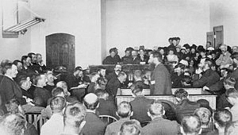

-1-MasterItem.svg)
Stories of Westminster United Church & its People / Page
33
After these dramatic (and historic) events,
Pitblado returned to the more urbane life
waiting for him in Winnipeg, serving again
with St. Andrews Church. Although his
sense of comfort didn’t last: in 1888,
pleading serious health issues, he relocated
to San Francisco, probably following the
advice of his doctor. (Whatever the source
of his affliction, which isn’t known, it was
more common for doctors of this era to
recommend a sojourn in a temperate
climate as a fix to certain ailments).
Notwithstanding his condition, he continued
working; serving as the new pastor of
Calvary Presbyterian Church, reputed by his family to have been one of the
largest Presbyterian
churches in America. (Calvary says they were the largest Presbyterian church in
San Fransisco!)
On the occasion of his induction, he remarked on his amazement that they had
hired him “on faith”
without ever having heard him preach; a sign of perhaps San Francisco’s own rapid and gold-fuelled
expansion, and consequent explosive labour demand, during the 1860s to the
1880s, which earned it
the nickname the “Paris of the West.” Calvary has no record of the date of his departure or the reason
for it, although their record does show that his stay was less than a year. In
any case, he didn’t stay
at Calvary long; moving to First Presbyterian Church in Santa Rosa,
California, once again for health reasons, according to the
Pitblado family record.
Four years and three churches later, Pitblado received an invitation
to minster a new Winnipeg Presbyterian congregation. He accepted.
His welcome back in 1888 back to the Gateway city was noteworthy
and generous: “Rev. Pitblado and Mrs. Pitblado arrived in Winnipeg

Rev. Charles Bruce Pitblado